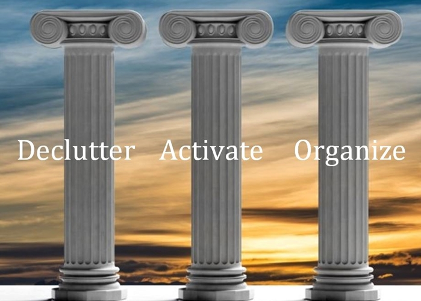
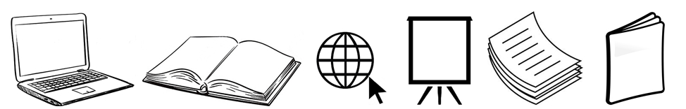

Workshop
“Writing for Clarity” modules
In this workshop, you’ll learn about the three pillars of effective writing:
Decluttering, Activating, and Organizing.
- Writing for Clarity 1: Declutter your message
- Writing for Clarity 2: Activate your text
- Writing for Clarity 3: Organize your ideas
These basic strategies will help you learn to write text that’s concise, clear, and easy for your audience to understand.
Once you master the techniques, you can apply your new skills to creating all kinds of reader-friendly content.
From “dull” to “dynamic”
As a professional editor, I’ve spent several decades helping writers to improve their text.
Now you can learn my secrets—such as how to:
- cull repetition, redundancy and deadwood from your sentences
- use language more concisely
- avoid needlessly wordy phrases
- use verbs instead of nouns, to give your text more energy
- eliminate the passive voice
- give every paragraph a clear identity
- craft a strong introduction and conclusion.
Originally designed for government employees, this interactive course consists of three independent modules, each best delivered in a three-hour block of time. Pen-and-paper exercises give participants hands-on practice at how to be a better writer.
Contact me to learn more about booking this workshop, including timing and cost.
